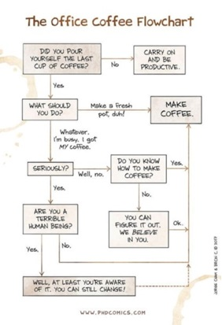

Stemworks
Machine Learning
Researched and written by Stephen Patrikios
One of the fastest growing developments currently occurring in IT is Machine Learning. Over the course of a day, we interact with apps and websites that utilise the power of Machine Learning without us recognising. From photo sharing, messaging, online shopping, voice recognition, health care, and even customer service, the integration of Machine Learning to our daily routines is slowly becoming seamless.
Taking a dive into computing as a whole, we can see where Machine Learning fits in. Diagram 11 shows that Machine Learning is a part of Artificial Intelligence (AI), which is a part of Computer Science. Diagram 22 shows three different learning models and which systems they are integrated in to. Supervised learning algorithms are trained using labelled examples where the system knows the answer. Unsupervised learning is used when the system does not know the answer and must explore the data to find patterns. Reinforcement learning, often used in gaming and robotics, is when the system learns, through trial and error, which is the best action to take to receive the greatest rewards. We could then define Machine Learning as a system of automated data processing algorithms (sequences of instructions performed to solve a problem) that help to make decision making more natural and enhance performance based on the results3.
 Diagram 2
Diagram 2Machine Learning enhances our daily interactions across many areas but as we can see in diagram 2, different algorithms are used in different areas based on the way the data is collected and the desired outcome to your query.
Let's take a look at Supervised Learning, which is used in spam email detection, image classification, weather forecasting, and identity fraud detection. A supervised learning approach to spam emails uses the frequency or importance of words in the training data to explore and analyse if the email should be classified as spam or non-spam (ham). That's how services like Gmail develop their spam filter. The banking and finance sector uses supervised learning to identify clients with high-risk profiles and pinpoint warning signs of fraud4. The image classification algorithms of supervised learning help Pinterest, who purchased Machine Learning company Kosei in 2015, learn what its users want next5.
Unsupervised learning can be used for facial and image recognition, feature elicitation, targeted marketing, and for big data visualisation. A facial recognition service compares the facial properties of individuals and cross-checks it on a vast amount of other data sets. This is how Facebook can not only correctly recognise your face, but also suggest your lookalike or doppelganger celebrity6.
For those of us who like taking photos but want that pro-look, app company Pixelmator use feature elicitation to deliver more intelligent image editing by using a model that has been trained on over 20 million professional photos7. Streaming service Netflix uses targeted marketing with such ever increasing accuracy that 75% of its users select films recommended to them by the company’s Machine Learning algorithms8. Even government agencies such as public safety and utilities have a particular need for Machine Learning. By mining their large amounts of data, big data visualisation models can identify ways to increase energy efficiency and save money.
Big data mining19Reinforcement learning can be used in video game AI, real-time decision making, and robot navigation. Microsoft's Project Mamlo9 created an AI-based development platform in Minecraft with the goal to study complex virtual environments and apply the lessons learned from that study to the physical world. The real-time decision making and robot navigation data from Grand Theft Auto V, is helping to train autonomous vehicles, robots, and drones.
The gaming software makes it possible to cycle through millions of possibilities and find subtle anomalies and correlations that determine whether an autonomous vehicle manoeuvres correctly for a dog on the road and stops at a traffic light that is not working, or simply crashes, at a relatively low cost to researchers10. In our current climate of staying at least two meters away from each other, the accuracy of robot navigation has become very important. Delivery robots are now being used in more towns and cities from companies like: Amazon, Kiwibot, and Starship Technologies with their wheeled delivery robots; Amazon and Wing with their delivery drones; and Boston Dynamics and Agility Robotics with their walking delivery robots11.
As more data becomes available and our devices become more integrated, the delivery of that data back to us will be more personalised, insightful and self-correcting. Our search engine results will be finely tailored, giving us greater detail, based on our past interactions. This will allow for a more unique, bespoke relationship between the consumer and their devices through targeted marketing and with better natural language processing we will be able to clearly and politely tell the AI that, 'Yes, I am interested in a set of mint condition troll dolls', or 'No, I'm very happy with my energy provider so please never call here again!'. Your day will start not by having to push buttons to start the social media channel you watch every morning, but with your environment sensing you are up and starting all of your necessary devices so that you can begin smashing life in the most iconic way ever.
If we remember that the goal of Machine Learning is to perfect the predictive function by refining it on as much data as possible6, and with an average of 640,000 people going online for the first time each day12, the shear volume and variety of data available to the algorithms will only increase. Adding in cheaper, more powerful computational processing, and more affordable data storage, the ideas of yesterday will definitely become the reality of next Thursday afternoon.
A potential positive impact on the rise of Machine Learning will be our greater understanding of the world around us based on thoroughly tested and proven research preformed using the data that we as a global community have provided. A potential negative impact would be the use of this data to target individuals or groups in a nefarious manner, leading to the rise of one and the demise of the other.
Something that is likely to change with better Machine Learning models is the increase in low to no code environments13. This means that anyone, not just programmers, will be able to build their own applications. Machine Learning will give non-programmers the ability to rapidly deploy their ideas but also give programmers the ability to customise their applications with other systems
Humanity as a whole has the potential to be affected by the rise of Machine Learning. Our, 'Stop, you're too close to me!' environment has seen the unprecedented sharing of data from across the globe, which is being used to train algorithms in an effort to fast-track a vaccine for this pandemic virus14. Generally, the lives of most people will be affected because the Machine Learning driven apps on their devices will seamlessly enhance their daily routines.
Due to the potential of Machine Learning, jobs will be made redundant and replaced, but most excitingly created. We are already seeing factory and low skilled workers being replaced by robots, which should be seen as an opportunity to retrain15. Apps are ubiquitous and with hours of YouTube tutorials and no code development software freely available, an idea can quickly become a source of income without having to go back to school. The impact of Machine Learning on the creation of jobs will be a positive one.
I think that as Machine Learning becomes more sophisticated, applications that require high levels of precision like natural language models will be more useful in my daily life. With friends and family around the world who do not speak the same language, a more precise speech translation app will be extremely useful when we group call each other. Also, as a student studying information technology, not only having access to free open source Machine Learning software like TensorFlow16, but more importantly projects to work on using the software, will be an invaluable experience as I seek employment over the course of my studies. As the Machine Learning software gains access to more data, it will be easier for me to produce something of value to society and hence more saleable to prospective employers.
Another added bonus to having more data is that I will have more time. I currently spend a lot of time searching the Internet for things I'm interested in or want to learn about. As Machine Learning improves, so too will the search engine results which will allow me to spend less time scrolling and more time watching or reading about the specific thing I originally searched for. Once smarter robots are made with the help of excellent unsupervised learning, time consuming tasks around the home like washing the dishes or clothes, can be given to these smarter robots without worrying that they might break my precious stuff.
A general affect for my friends and family that live overseas and don't speak English, is that they won't have to be concerned that I haven't understood them as they can just speak or type into the app in their native language and know, 100 percent, that their message has been translated correctly using their own unique linguistic flair. I also think that as image recognition models become more accurate, and my friends and family get older, being able to take a picture of something and access an accurate database of information at their fingertips will be fantastic. Lots of my family have recently taken up gardening, so being able to identify the type of plant, what condition it is in, and how to improve its condition, will help them make their gardens to thrive. As we head for the future, possibly with greener thumbs, Machine Learning is going to be there with us, quietly working in the background, making our world that little bit more fascinating.
References
[1] Oliver Wyman. (2020) The Risk Of Machine-Learning Bias (And How To Prevent It). Retrieved April 08, 2020, from https://www.oliverwyman.com/our-expertise/insights/2018/dec/risk-journal-vol-8/rethinking-tactics/the-risk-of-machine-learning-bias-and-how-to-prevent-it.html
[2] COGNUB. (2020) Cognitive Computing and Machine Learning - Cognub. Retrieved April 08, 2020, from http://www.cognub.com/index.php/cognitive-platform/
[3] Zee Gimon. (2020) Introduction to Machine Learning Algorithms for Beginners. Retrieved April 08, 2020, from https://huspi.com/blog-open/guide-to-machine-learning-algorithms
[4] Hui Li. (2020) Machine Learning: What it is and why it matters | SAS. Retrieved April 08, 2020, from https://www.sas.com/en_us/insights/analytics/machine-learning.html
[5] Dan Shewan. (2020) 10 Companies Using Machine Learning in Cool Ways | WordStream. Retrieved April 09, 2020, from https://www.wordstream.com/blog/ws/2017/07/28/machine-learning-applications
[6] Freiesleben, J. (2018). Revolutionary Impact? Quality Progress, 51(10), 30-36.
[7]Pixelmator Team. (2020) Machine Learning - Pixelmator Pro. Retrieved April 09, 2020, from https://www.pixelmator.com/pro/machine-learning/
[8] Louis Columbus. (2020) Roundup Of Machine Learning Forecasts And Market Estimates, 2020. Retrieved April 08, 2020, from https://www.forbes.com/sites/louiscolumbus/2020/01/19/roundup-of-machine-learning-forecasts-and-market-estimates-2020/#1ac2e4645c02
[9] Microsoft. (2020) Project Malmo - Microsoft Research. Retrieved April 12, 2020, from https://www.microsoft.com/en-us/research/project/project-malmo/
[10]Greengard, S. (2017). Gaming Machine Learning. Communications of the ACM, 60(12), 14-16.
11 BBC newsround. (2020) How robots and drones are changing the way we get food delivered to our doorstep - BBC Newsround. Retrieved April 11, 2020, from https://www.bbc.co.uk/newsround/48706572
[12] Max Roser, Hannah Ritchie and Esteban Ortiz-Ospina. (2020) Internet - Our World in Data. Retrieved April 11, 2020, from https://ourworldindata.org/internet
[13] Devin Pickell. (2020) What Is the Future of Machine Learning? We Asked 5 Experts. Retrieved April 11, 2020, from https://learn.g2.com/future-of-machine-learning
[14] Robert Florida. (2020) DSI Alumni Use Machine Learning to Discover Coronavirus Treatments | Data Science Institute. Retrieved April 11, 2020, from https://datascience.columbia.edu/dsi-alumni-use-machine-learning-discover-coronavirus-treatments
[15] Larry Elliott. (2020) Robots will take our jobs. We’d better plan now, before it’s too late | Larry Elliott | Opinion | The Guardian. Retrieved April 11, 2020, from https://www.theguardian.com/commentisfree/2018/feb/01/robots-take-our-jobs-amazon-go-seattle
[16] Google. (2020) TensorFlow. Retrieved April 11, 2020, from https://www.tensorflow.org/
[17] Jorge Cham & Brcin C. (2017) PHD Comics: The Office Coffee Flowchart. Retrieved April 12, 2020, from http://phdcomics.com/comics/archive.php?comicid=1987
[18] Emmanuelle Rieuf. (2020) Email Spam Filtering : A python implementation with scikit-learn - Data Science Central. Retrieved April 11, 2020, from https://www.datasciencecentral.com/profiles/blogs/email-spam-filtering-a-python-implementation-with-scikit-learn
[19] Bastien L. (2018) Data Mining définition : Qu'est-ce que l'exploration des données ?. Retrieved April 12, 2020, from https://www.lebigdata.fr/data-mining-definition-exemples